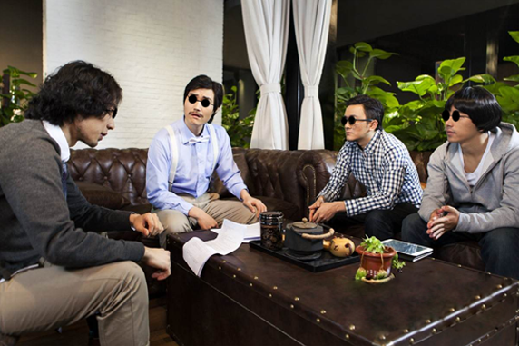

跟着总书记笃行中国梦
上世纪八十年代，农村条件艰苦，村子里没有什么娱乐，跟别说什么电视了。 而我们这些孩子，除了疯疯打打外，最喜欢就是说书先生了。
这说书先生一来很有文化，二会讲故事，喜欢跟我们讲什么三国演义，红楼梦以及西游记，水浒传，特别受到我们孩子的欢迎。
要说当年的说书先生，还真是十八般武艺样样齐全、他们是一边说书，又煞费表情，表演的很真实，还比手画脚，蹦蹦跳跳，实在是有趣。
不过我们本村并没有说书先生，都是流动的外来人口，来到我们村子表演，然后找村民讨点水酒吃。
村民毕竟还是和善好客的，虽然那时候，我们村子里并不富裕，不过村子里出产最多的就是红薯。
红薯能填满人的肚子，也就给人希望。我记得那天，天蓝蓝的，我和大壮、金花，我们三人和一大群孩子疯玩。 大壮名字叫做大壮，却最为胆小。金花虽然是个女孩，胆子挺大，像个男孩子。那天我父母走亲戚去了，本来我也去了的，只是中午吃完饭又跑回来跟他们玩了。时至下午，天突然阴了下来，大朵大朵的乌云聚集交错在一起，时而还能听到擦擦的闪电声，又加上狂风大作，风声呜呜作响，天昏沉沉的，简直就是阴森恐怖。当时我们家没人，我干脆邀请大壮和金花去我家里玩。不过那时候家里穷，三人进屋后，也没什么可玩的，正闲着东一句西一句的聊着。 这时候，只听吱嘎一声，那声音静悄悄的，我听到我家的大门被人推开了。可是我记得我明明关上门的，可把我吓得够呛，大壮就更是吓得哆嗦，以为来了小偷。
反而是金花，胆子最大，简直就是女汉子。一把操起铁铲，扛在肩头，一拍大腿道：“跟我来，我就不信了！”我和大壮胆怯的跟在金花身后，我们来到了大院，一看，大门半开合着，而在院子的大树下，似乎躲着一个人。 “谁，给我出来~”金花气势很足，犹如猛虎下山，把躲在树后的人吓得哆嗦。慢慢的，树后之人，缓缓走了出来。我们一看，是一个四十来岁的男人，不过他穿着打扮很奇怪。他穿着一条青色马褂，马褂颜色很旧了，上面还有